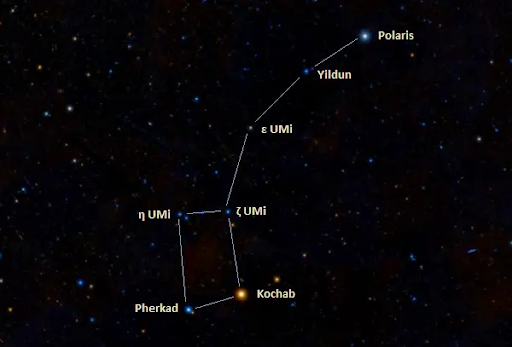
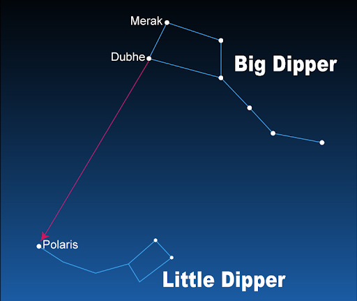

Ursa Minor
Polaris is a major star in the constellation Ursa Minor, the Little Bear. This constellation includes a group of stars that are called the Little Dipper. Polaris is located at the end of the handle of the Little Dipper. If you can locate this constellation, then locating Polaris is not much harder after that. Other significant stars in this constellation include Kochab and Pherkad. Kochab being the second brightest star in the constellation and Pherkad being the third brightest star inside the constellation.
Ursa Major
Another way of locating Polaris is using the Big Dipper in the Ursa Major constellation. The Big Dipper is one of the easiest star patterns to locate in the sky. Looking similar to a kitchen ladle, the Big Dipper is visible about every clear night. The two stars Dubhe and Merak can be used as pointers to help locate Polaris. In other words, you can imagine an invisible arrow that starts from Merak and Dubhe and follow it until you see the North Star, Polaris. This method used to locate Polaris is generally easier because the stars in the Big Dipper are significantly brighter than the Little Dipper’s stars. We should also note that the Little Dipper and the Big Dipper aren’t constellations, but asterisms.
Best Time to View Polaris
Polaris is a circumpolar star which means it is visible every night in the northern hemisphere. However, if you are located in the southern hemisphere, you won’t be able to see Polaris at all at any time of the year, unfortunately. Since Polaris is located very close to the rotational axis of the Earth, it will never go towards the south direction like other stars might. Locating Polaris might be challenging on the equator because the North Star would be very close to the horizon, making it more likely that obstructions may block you from seeing the star.